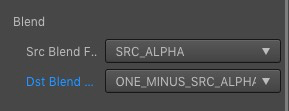
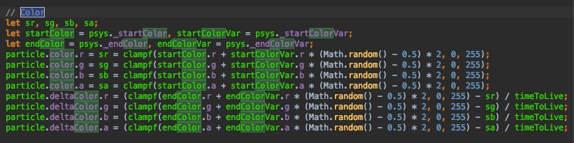

如何控制颜色？
首先来看一下参数的含义
- starColor: 原始叠加颜色
- starColorVar：浮动值
- endColor:结束叠加颜色
- endColorVar:浮动值
计算方式为：
开始叠加色 = 原始叠加颜色 ± 浮动值/2
结束叠加色 = 结束叠加颜色 ± 浮动值/2
图片最终的颜色 = 图片原来的颜色 * (叠加色/255)
举个例子：
有一张绿色的图片：rgba(0, 255, 0, 255),我想让他颜色从不发生任何偏差,该怎么做呢?
正确的设置是
- 颜色设置 (注意:是透明黑色,透明的!):
- startColor = 白色 = rgba(255, 255, 255, 255)
- startColorVar = 透明黑色 = rgba(0, 0, 0, 0)
- endColor = 白色 = rgba(255, 255, 255, 255)
- endColorVar = 透明黑色 = rgba(0, 0, 0, 0)
- 混合模式设置:

为什么是这样子呢? 我们看一下这张绿色图片的叠加色计算过程:
叠加色.r = startColor.r ± startColor.r/2 = 0 ± 0 = 0
叠加色.g = startColor.r ± startColor.r/2 = 255 ± 0 = 255
叠加色.b = startColor.r ± startColor.r/2 = 0 ± 0 = 0
叠加色.a = startColor.r ± startColor.r/2 = 255 ± 0 = 255
很明显,叠加色最终还是变成了绿色(0, 255, 0, 255), 接下来图片的真实颜色计算过程为
图片.r = 图片.r (叠加色.r / 255) = 0 ( 0 / 255 ) = 0
图片.g = 图片.g (叠加色.g / 255) = 255 ( 255 / 255 ) = 255
图片.b = 图片.b (叠加色.b / 255) = 0 ( 0 / 255 ) = 0
图片.a = 图片.a (叠加色.a / 255) = 0 ( 0 / 255 ) = 0
结果,图片还是变成了绿色,也就是说叠加色的色值最终会变成取值范围[0-1]的数,然后原始图片颜色和这个叠加色相乘, 如果你明白
颜色A * 白色 = 颜色A
那么你就明白这个计算过程了,因为白色是1,任何数和1相乘还是任何数!
在cocos引擎中管理这块的代码为, 现在理解更加深刻了吧! 
而混合模式的计算,具体参考这里吧: https://www.andersriggelsen.dk/glblendfunc.php